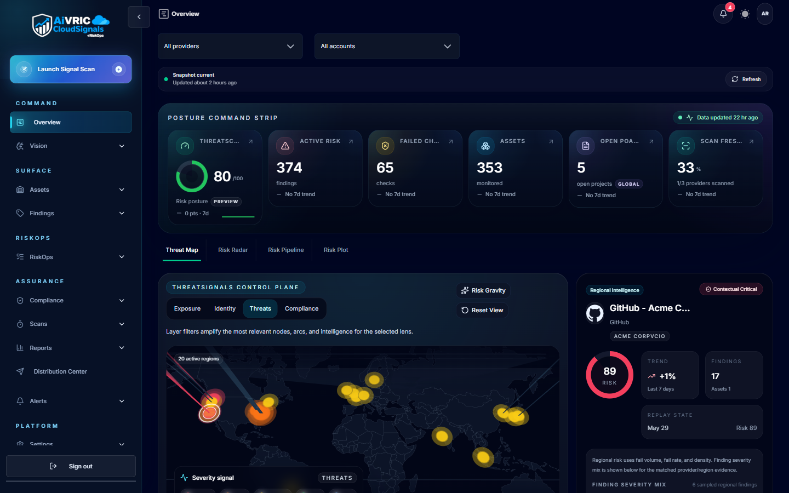
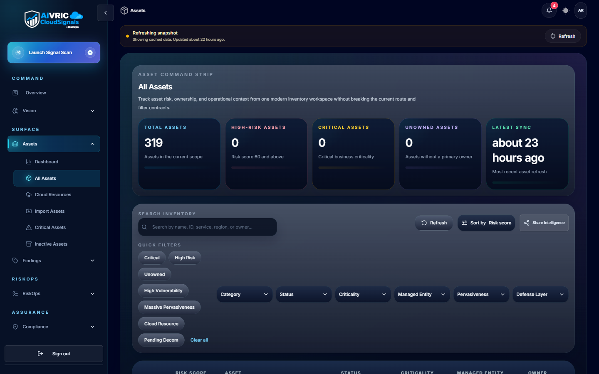
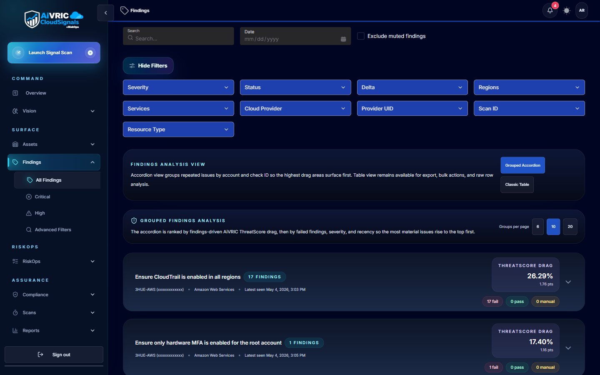

Platform overview
AiVRIC is a set of apps that each do one job and talk to each other through one signed contract. This page covers how they fit, what you can connect, the guardrails around changes and where your data lives. For the full picture, see the Platform.
Architecture
CloudSignals and AISignals sense, AIRE Agentic Mesh acts, AiVRIC RiskOps decides, and the two Vision apps show the program to the people who answer for it. No app reads another app's database: findings, control changes, evidence and approvals travel between them as signed events, and replays are rejected.
CloudSignals
Cloud security posture, risk operations and continuous compliance across AWS, Azure, Google Cloud, Oracle Cloud, Alibaba Cloud, Kubernetes and more, landing as findings in the workspace.
AISignals
Observability for production language models (traces, cost, latency and evaluations) and 31 AI security checks that run on your own runner.
AIRE Agentic Mesh™
Governed remediation: fixes from a catalog of known actions, on a Trust Ladder you set, with a second person's approval, an independent check and sealed evidence.
AiVRIC RiskOps
In build. Where risks are treated, accepted or transferred, and who decided.
Enterprise Vision & Client Vision
The program shown to the people who answer for it. Enterprise Vision runs your own; Client Vision runs it for each client of a provider.
The record
An append-only, hash-chained audit trail in every app, with a check anyone with audit rights can run.

Connectors
CloudSignals connects with read-only, least-privilege access. There are no agents to install in your cloud accounts. The full list, with what's available today, is on the Integrations page.
| Category | What you can connect |
|---|---|
| Public clouds | AWS, Microsoft Azure, Google Cloud, Oracle Cloud, Alibaba Cloud |
| Kubernetes and code | Kubernetes, GitHub, infrastructure as code |
| SaaS and data | Microsoft 365 / Entra ID, MongoDB Atlas, Cloudflare |
| Attack surface | Your domains, DNS, certificates, email and web exposure |
| Work and SIEM | Jira, Microsoft Teams, Splunk, Microsoft Sentinel; ServiceNow in build |
Guardrails for changes
AIRE Agentic Mesh decides how far a fix may go on its own from a Trust Ladder you set per playbook and per environment. An environment it doesn't recognize counts as production.
| Level | What happens |
|---|---|
| L0 Observe | It watches and reports. Nothing changes. |
| L1 Recommend | It proposes the fix; people make it. |
| L2 Approve to execute | It acts once a second person approves. |
| L3 Auto, with guardrails | It acts inside the guardrails you set. |
| L4 Autonomous within budget | It acts on its own, up to a budget. |
Approvals
The person who approves is never the person who asked, and the approval is signed.
Rollout and rollback
Changes land in canary waves, starting with a single target, and roll back if health checks regress.
Evidence
A separate read-only identity checks the result, and every case ends in a signed, hash-chained evidence record.
Deployment model
The hosted service runs on Google Cloud in the US. Each scan runs as its own Kubernetes job, with its own pod and an identity that can't touch the cluster, sized from how big your estate was last time.


Data handling
Your workspace sits in the platform's database on Google Cloud in the US, separated from every other workspace. The Trust Center lists the subprocessors and what we can share under NDA.
Isolation
Row-level security in every app: a workspace sees only its own rows, with no access by default. The application can't widen it.
Encryption and secrets
Encrypted in transit and at rest. Platform secrets are held in Google Cloud Secret Manager, and connector keys are sealed on arrival.
AI
The Vision apps' assistant runs on Anthropic, through AiVRIC's key or your workspace's own, and prompts aren't stored. CloudSignals' chat uses the provider you choose and scrubs personal data first.